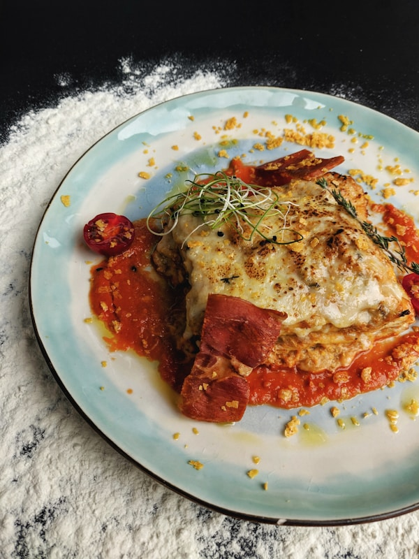

Lasagna

Description
Классическая итальянская лазанья — слои пасты, мясного соуса болоньезе,
нежного бешамеля и расплавленного сыра. Сытное блюдо для семейного ужина.
Готовится дольше обычного, но результат того стоит: ароматная,
с золотистой сырной корочкой.
Ingredients
- Листы лазаньи — 250 г
- Фарш говяжий — 500 г
- Томатный соус — 400 г
- Сыр моцарелла — 200 г
- Сыр пармезан — 50 г
- Соус бешамель — 500 мл
- Лук, чеснок, соль, перец
Steps
- Обжарьте лук и чеснок, добавьте фарш и томатный соус, тушите 20 минут.
- Выкладывайте слоями: соус, листы лазаньи, бешамель, сыр — повторите.
- Посыпьте верх пармезаном.
- Запекайте при 180 °C около 40 минут до золотистой корочки.
- Дайте постоять 10 минут перед подачей.
Home